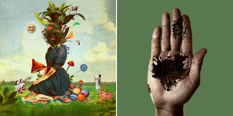
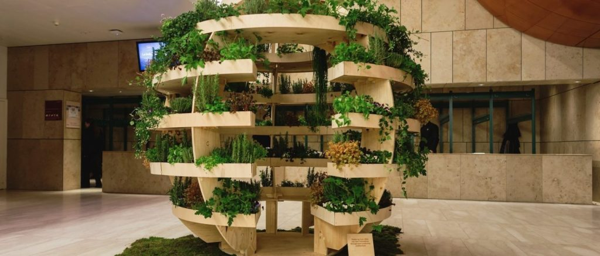
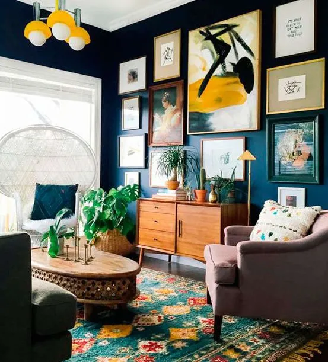

TRANSFORMANDO IDEIAS EM REALIDADE, PIXEL POR PIXEL.
SOBRE
NOSSA MISSÃO
No Design Studio, nossa missão é simples: criar designs excepcionais que impressionam, inspiram e cativam. Estamos comprometidos em oferecer soluções de design sob medida que destacam a identidade e a mensagem de nossos clientes, impulsionando seu sucesso e impacto.
O QUE NOS DIFERENCIA
Criatividade Ilimitada: Nossa abordagem criativa e inovadora nos permite pensar além dos limites convencionais e criar designs que se destacam.
Experiência e Expertise: Com anos de experiência em diversas áreas do design, nossa equipe tem o conhecimento e as habilidades necessárias para enfrentar qualquer desafio de design.
Colaboração Centrada no Cliente: Valorizamos a colaboração e a comunicação transparente com nossos clientes, garantindo que suas necessidades e visão sejam totalmente compreendidas e refletidas em nossos projetos.
Compromisso com a Qualidade: Nosso compromisso com a excelência garante que cada projeto seja entregue com atenção aos detalhes e qualidade excepcional.
NOSSA ABORDAGEM
No Design Studio, adotamos uma abordagem centrada no cliente e orientada para resultados em todos os nossos projetos de design. Trabalhamos em estreita colaboração com nossos clientes para entender suas metas, desafios e visão, desenvolvendo soluções de design personalizadas que atendam às suas necessidades e superem suas expectativas.
JUNTE-SE A NÓS
Se você está procurando um parceiro de design confiável e criativo para trazer sua visão para a vida, o Design Studio está aqui para ajudar. Entre em contato conosco hoje mesmo para discutir seu próximo projeto de design e começar a trabalhar em algo incrível juntos!
SERVIÇOS
-
Design Gráfico
Abrange as criações visuais que protegem a sua marca e seus projetos.
-
Design de Interiores
Refere-se ao conjunto de normas e regulamentos que garantem a proteção e os direitos dos usuários em ambientes internos.
-
Design Digital
Dedica-se a regulamentar e proteger os aspectos visuais relacionados à era digital, abrangendo temas como experiência do usuário e acessibilidade.
5 TENDÊNCIAS DE DESIGN GRÁFICO QUE ESTÃO DOMINANDO 2024
Introdução:
Como designers, estamos sempre buscando ficar à frente das últimas tendências e inovações que moldam nosso campo. Com o início de um novo ano, é hora de explorar as tendências de design gráfico que estão definindo o cenário criativo em 2024. Neste post, vamos mergulhar em cinco tendências emocionantes que estão dominando o mundo do design gráfico este ano.
1. Neo-Surrealismo:
Inspirado pelo movimento surrealista do século XX, o neo-surrealismo está emergindo como uma tendência de design gráfico altamente influente em 2024. Caracterizado por imagens oníricas, combinações inesperadas de elementos visuais e cores vibrantes, o neo-surrealismo desafia as expectativas e cativa o espectador com sua estética intrigante e surreal.

2. Tipografia 3D:
A tipografia 3D está se tornando uma ferramenta poderosa para designers que desejam adicionar profundidade e dimensão às suas criações. Com avanços na tecnologia de renderização e animação, estamos vendo uma explosão de letras e palavras que saltam da tela, criando impacto visual e atraindo a atenção do público de maneiras novas e emocionantes.

3. Design Ecológico:
Com a crescente conscientização sobre questões ambientais, o design ecológico está ganhando destaque como uma tendência importante em 2024. Os designers estão cada vez mais comprometidos em criar soluções sustentáveis e eco-friendly, utilizando materiais reciclados, cores naturais e ilustrações que celebram a beleza da natureza.

4. Minimalismo Maximalista:
O minimalismo maximalista combina a simplicidade do minimalismo com a expressividade do maximalismo, criando designs que são ao mesmo tempo elegantes e impactantes. Essa tendência se manifesta em layouts limpos e espaços em branco generosos, complementados por detalhes gráficos ousados e cores vivas que adicionam uma dose de energia e vitalidade ao design.

5. Nostalgia Digital:
Com a nostalgia pela cultura pop dos anos 80 e 90 em alta, estamos vendo uma ressurgência da estética retro no design gráfico. De gráficos pixelados e paletas de cores neon a referências a ícones da cultura pop, a nostalgia digital evoca uma sensação de nostalgia e familiaridade que ressoa com o público contemporâneo.

CONTATO
Fale conosco para discutir seus projetos e necessidades.
© 2024 Lucas S. Ferreira / Design Studio